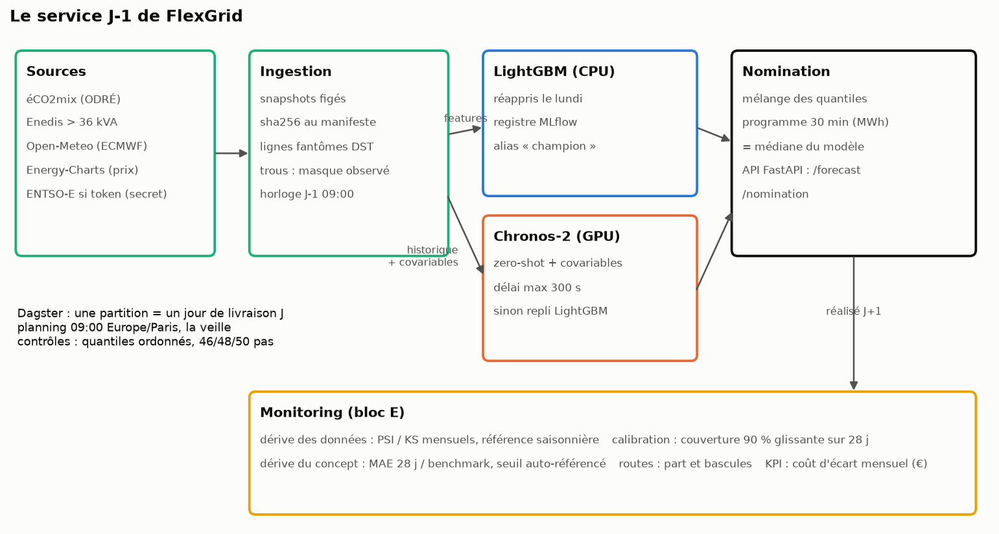
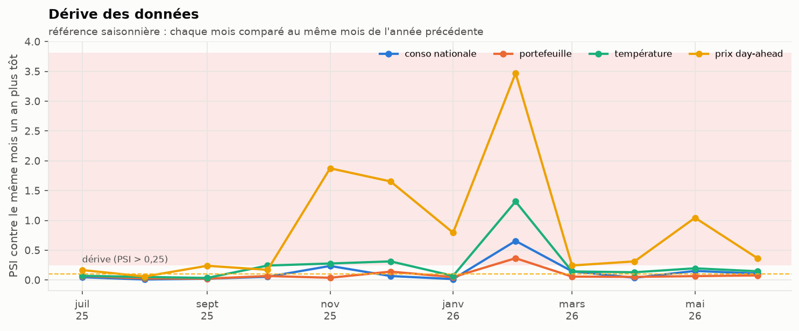
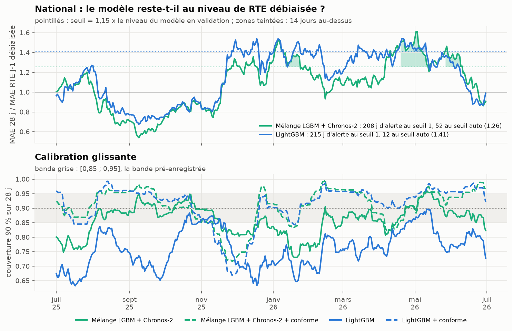
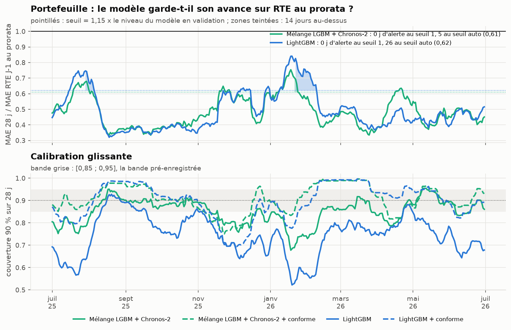

D-E · Production et monitoring
Le brief demande une orchestration J-1, un registre de modèles, un service batch et une API de quantiles, des conteneurs, un secret pour le token ENTSO-E (bloc D), puis une stratégie de monitoring (bloc E). Tout tourne ici en local. Le monitoring est rejoué sur l’année de test : il n’y a pas eu de vraie mise en service, et on le dit.

D. Le service
Ce qui tourne
| Brique | Rôle | Fichier |
|---|---|---|
| Dagster | une partition = un jour de livraison J ; planning à 09:00 heure de Paris la veille | src/flexgrid/prod/dagster_defs.py |
| MLflow | registre : LightGBM quantile (7 boosters) emballé en modèle pyfunc, alias champion |
src/flexgrid/prod/registry.py |
| Service | réapprentissage, prévisions LightGBM + Chronos-2, mélange, nomination | src/flexgrid/prod/service.py |
| FastAPI | /health, /forecast/{famille}/{jour} (quantiles), /nomination/{famille}/{jour} (MWh) |
src/flexgrid/prod/api.py |
| Docker | une image, trois services (API, Dagster, MLflow) ; données et registre montés en volume | Dockerfile, docker-compose.yml |
La configuration est dans configs/prod.yaml : modèle nommé ensemble (le meilleur du backtest sur le portefeuille), repli lgbm si Chronos-2 échoue ou dépasse 300 s (GPU absent, par exemple). Le repli est une fonction du service : la raison est écrite à côté de la prévision (<jour>.status.json), et la nomination dit quel modèle a été nommé.
uv sync --extra prod
DAGSTER_HOME=$PWD/dagster_home uv run dagster asset materialize -m flexgrid.prod.dagster_defs --select '*' --partition 2026-03-29
uv run uvicorn flexgrid.prod.api:app --port 8000
curl localhost:8000/nomination/segments/2026-03-29Ce qui a été vérifié
Trois partitions ont été matérialisées de bout en bout (journaux dans logs/prod_<jour>.log, non versionnés) :
| Jour de livraison | Pas attendus | Nomination national | Nomination portefeuille | Réapprentissage |
|---|---|---|---|---|
| 26 octobre 2025 (heure d’hiver) | 50 | 50 pas | 50 pas | oui (pas de champion valide) |
| 29 mars 2026 (heure d’été) | 46 | 46 pas | 46 pas | oui |
| 30 juin 2026 (mardi) | 48 | 48 pas | 48 pas | oui (réapprentissage hebdomadaire) |
- Le contrôle d’actif Dagster (quantiles ordonnés, nombre de pas du jour local) passe sur les trois.
- La production reproduit le backtest. Chronos-2 donne exactement les mêmes quantiles (écart 0,00 %). Pour LightGBM, le 30 juin, où le service et le backtest réapprennent à la même date, l’écart est aussi de 0,00 %. Les autres jours, l’écart moyen de la médiane est de 0,4 à 1,9 %. Il vient de la date de réapprentissage : le service, rejoué sur un jour isolé, réapprend ce jour-là, alors que le backtest garde le modèle du mardi.
- L’API sert les quantiles et la nomination, et renvoie 404 pour un jour non prévu. Un test (
tests/test_api.py) le vérifie sur une journée de 50 pas.
Un bug trouvé en rejouant le passé
La première exécution, sur le 26 octobre 2025, a utilisé pour le national le champion du registre, appris pour le 30 juin 2026 : un modèle qui avait vu huit mois de données postérieures à l’émission. En service réel, cela n’arrive pas : on avance dans le temps. Mais c’est exactement ce que fait un backfill. Règle ajoutée (dagster_defs.needs_refit, testée) : un champion n’est réutilisé que s’il a été appris pour un jour de la semaine qui précède, jamais après.
Le token ENTSO-E
Le client ENTSO-E (src/flexgrid/sources/entsoe.py) lit le token dans ENTSOE_TOKEN ou dans le fichier désigné par ENTSOE_TOKEN_FILE, monté par Docker comme secret (.secrets/entsoe_token, ignoré par git). Il n’apparaît ni dans le code, ni dans la configuration, ni dans l’image. Faute de token, le service tourne sur éCO2mix et Energy-Charts. Le client est testé sur une réponse XML enregistrée.
Addendum du 2026-10-16 : le service garde le mélange LightGBM + Chronos-2
La règle était fixée avant les calculs (configs/protocol.yaml, addendum_2026_10_16, question 3) : un mélange de l’addendum ne remplace ensemble que s’il a un MAE plus bas sur le portefeuille pendant la validation (janvier-juin 2025), et l’année de test confirme ou infirme. Nombres : results/production_switch.csv (uv run flexgrid tables).
| Mélange | MAE validation (MW) | Éligible | MAE test / ensemble (IC 95 %) |
|---|---|---|---|
ensemble (LightGBM + Chronos-2, en service) |
2,92 | 1 | |
| LightGBM ½ + Chronos-2, Timestral, TimesFM ⅙ chacun | 2,84 | oui | 1,014 [0,988 ; 1,042] |
| LightGBM + Timestral | 2,90 | oui | 1,032 [0,999 ; 1,074] |
| LightGBM + TimesFM 3.0 | 3,11 | non | 1,147 [1,095 ; 1,200] |
| Les quatre à parts égales | 3,00 | non | 1,103 [1,057 ; 1,156] |
| LightGBM + Timestral contexte long (a posteriori) | 2,68 | non (a posteriori) | 0,930 [0,885 ; 0,984] |
Deux mélanges passent la validation ; l’année de test ne confirme ni l’un ni l’autre (« pas de différence »), et chacun demanderait deux modèles de plus sur le GPU. Le service ne change pas : nomination_model: ensemble. Le mélange avec Timestral à contexte long est le seul à faire mieux sur le test, mais il a été construit après avoir vu le national : il sera candidat d’un prochain protocole, évalué sur une fenêtre qu’il n’a pas vue.
Timestral-5M tourne sur CPU ; il aurait pu servir de repli sans GPU. Il ne fait pas l’affaire : MAE de 5,36 MW sur le portefeuille (results/summary_portfolio.csv), au niveau de RTE au prorata (5,28), contre 2,64 pour LightGBM, qui reste le repli.
Licence : les poids de TimesFM 3.0 excluent l’usage commercial. Ce dépôt est une veille personnelle ; si un mélange avec TimesFM avait été retenu, il n’aurait pas pu servir chez un vrai BRP sans autre licence.
Ce qui manque pour une vraie production
- L’ingestion temps réel. Le service lit les snapshots figés de
data/raw/. Brancher les API (éCO2mix, Enedis, Open-Meteo) demande une tâche d’ingestion par source, avec les mêmes contrôles qu’au bloc A. Les courbes de charge des sites, elles, viennent du gestionnaire de réseau par un canal contractuel, pas d’une API publique. - Un magasin de variables. Les variables sont recalculées à chaque prévision (quelques secondes) : à cette échelle, un feature store n’apporterait rien de mesurable.
- L’envoi de la nomination au marché ou au gestionnaire d’équilibre : le service s’arrête au fichier.
- Une image plus légère. L’image construite (
docker build -t flexgrid-dayahead:local .) sert l’API en conteneur, vérifié sur/healthet/nomination. Elle pèse 6,9 Go compressés (20,8 Go sur disque), presque tout pour torch et CUDA. L’API seule n’a besoin ni de torch ni de LightGBM : une image séparée pour l’API la ramènerait à quelques centaines de Mo. - Chronos-2 dans le conteneur a besoin d’un GPU (
deploy.resourcesde Compose) ; sans GPU, le repli LightGBM prend le relais, ce qui coûte 3 % de MAE sur le portefeuille d’après le backtest (2,64 MW contre 2,57).
E. La surveillance, rejouée sur l’année de test
Nombres : results/monitoring_summary.json, results/monitoring_data_drift.csv, results/monitoring_monthly_kpi.csv. Figures : uv run python -m flexgrid.figures_monitoring.
Dérive des données

Chaque mois de l’année de test est comparé au même mois de l’année précédente (PSI et KS). La référence est saisonnière, sinon tout mois d’hiver « dériverait » par rapport à l’été. Seuil usuel : PSI > 0,25. - Le prix dérive la plupart des mois (7 mois sur 12, PSI max 3,47 en février 2026). Ce n’est pas une alerte utile : le prix change de régime d’une année à l’autre. Il ne sert qu’à valoriser l’erreur, pas à prévoir. - Février 2026 dérive sur toutes les variables : température (PSI 1,32), consommation nationale (0,66), portefeuille (0,37). Février 2026 a été 3 °C plus doux que février 2025 (9,2 °C contre 6,3 °C en moyenne nationale observée). Une dérive des entrées n’est pas une panne : les modèles l’ont absorbée, la figure suivante le montre.
Dérive du concept : le modèle garde-t-il son niveau ?
Le brief demande « MASE/CRPS glissant vs baseline RTE ; alerte si dégradation persistante ». Le ratio suivi est le MAE sur 28 jours du modèle divisé par celui de la référence. Une alerte sonne après 14 jours consécutifs au-dessus du seuil.

Le seuil naïf (« le modèle fait moins bien que la référence ») est inutilisable au national. Il sonne 208 jours sur 365 pour le mélange et 215 pour LightGBM : on sait depuis le backtest que le modèle est moins bon que RTE débiaisée hors de l’été. Une alerte qui sonne la moitié de l’année n’est plus lue. Le seuil retenu est auto-référencé : 1,15 fois le ratio du modèle sur la fenêtre de validation. Il sonne 52 jours pour le mélange (mi-janvier, avril-mai et juin) et 12 pour LightGBM.

Sur le portefeuille, contre RTE au prorata, aucune alerte au seuil naïf : le modèle garde son avance toute l’année. Le seuil auto-référencé sonne 5 jours pour le mélange (février) et 26 pour LightGBM (août et février), quand le ratio remonte vers 0,75-0,85.
Calibration
Le panneau du bas de chaque figure suit la couverture de l’intervalle 90 % sur 28 jours, la question du brief : « un 90 % qui dérive à 70 % = perte d’argent ». C’est arrivé : la couverture brute de LightGBM descend à 0,52 sur le portefeuille en janvier, et sous 0,65 au national. La réparation conforme la ramène dans la bande la plupart du temps, mais elle suit avec retard les changements de saison : sur 28 jours glissants, la couverture du mélange réparé tombe à 0,75 fin novembre sur le portefeuille (0,78 en moyenne sur le mois).
Décision de routage
Suivie au bloc 03 (dérive des routes) : le stump bascule entre 0 et 50 segments selon la saison, 4,3 segments par semaine en moyenne. Le service nomme le mélange, qui n’a pas de décision à surveiller.
Le KPI de tête : le coût d’écart mensuel
| Mois | MAPE | Écart (MWh) | Coût k = 1 | Coût k = 0,25 | Couverture 90 % réparée |
|---|---|---|---|---|---|
| juil. 2025 | 2,9 % | 1 822 | 94 k€ | 24 k€ | 0,89 |
| août 2025 | 1,9 % | 1 232 | 67 k€ | 17 k€ | 0,98 |
| sept. 2025 | 1,9 % | 1 207 | 42 k€ | 10 k€ | 0,90 |
| oct. 2025 | 1,9 % | 1 227 | 69 k€ | 17 k€ | 0,88 |
| nov. 2025 | 3,4 % | 2 433 | 159 k€ | 40 k€ | 0,78 |
| déc. 2025 | 3,5 % | 2 749 | 193 k€ | 48 k€ | 0,89 |
| janv. 2026 | 3,5 % | 2 898 | 293 k€ | 73 k€ | 0,93 |
| févr. 2026 | 2,6 % | 1 650 | 73 k€ | 18 k€ | 0,99 |
| mars 2026 | 2,5 % | 1 716 | 108 k€ | 27 k€ | 0,93 |
| avr. 2026 | 3,1 % | 1 854 | 86 k€ | 21 k€ | 0,89 |
| mai 2026 | 3,1 % | 2 005 | 92 k€ | 23 k€ | 0,89 |
| juin 2026 | 2,5 % | 1 723 | 108 k€ | 27 k€ | 0,93 |
Mélange, portefeuille FlexGrid. C’est le tableau qu’un responsable d’équilibre regarderait chaque mois. Il dit aussi la limite de ce chiffre : janvier coûte sept fois septembre pour une énergie en écart 2,4 fois plus grande, parce que le prix et l’erreur montent ensemble en hiver.
Ce que le rejeu ne montre pas
Le monitoring rejoué connaît déjà toute l’année. Les seuils ont été fixés après avoir vu la saturation du seuil naïf : c’est une décision prise sur les données de test, déclarée dans les notes d’implémentation. Un vrai monitoring les fixerait sur la validation et les garderait un an.